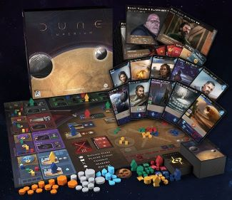

Publishing Info:
- Designer: Paul Dennen
- Artists: Clay Brooks, Raul Ramos, and Nate Storm
- Publishers:
- Dire Wolf
- Arclight Games
- Asmodee
- Released: 2020
Game Description:
Dune: Imperium is a game that finds inspiration in elements and characters from the Dune legacy, both the new film from
Legendary Pictures and the seminal literary series from Frank Herbert, Brian Herbert, and Kevin J. Anderson. You start with
a unique leader card, as well as a deck identical to those of your opponents. As you acquire cards and build your deck,
your choices will define your strengths and weaknesses. Cards allow you to send your Agents to certain spaces on the game board,
so how your deck evolves affects your strategy. Defeat your rivals in combat, shrewdly navigate the political factions,
and acquire precious cards. The Spice must flow to lead your House to victory!

Gameplay:
- Player Count: 1 - 4 Players
- Avg Play Time: 60 - 120 Minutes
- Recommended Age: 14+
- Game Genre: Strategy